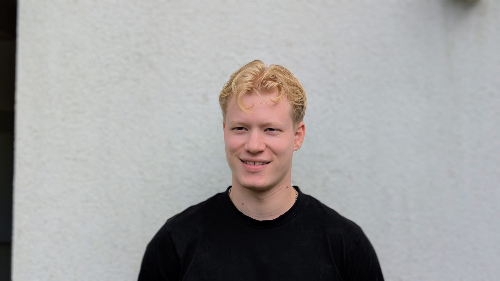

Finn Lüngen
Business informatics graduate from Osnabrück

About me
I have a Bachelor's degree in Wirtschaftsinformatik (business informatics) from Universität Osnabrück. During my studies I worked there as a student research assistant on a VR research project and developed a VR app.
Education and experience
-
Since Oct. 2026
M.Sc. Business Intelligence and Process Management
Berlin School of Economics and Law
-
Feb. to Sep. 2026
Student research assistant (HiWi)
Universität Osnabrück. Worked on an applied VR research project.
-
2022 to 2026
B.Sc. Wirtschaftsinformatik
Universität Osnabrück
-
2022
Abitur
Osnabrück
Skills
- SQL
- Python
- Java
- C++
Languages
- German
- Native
- English
- C1
- Arabic
- Learning
Contact
- GitHub
- github.com/Finn-Luengen